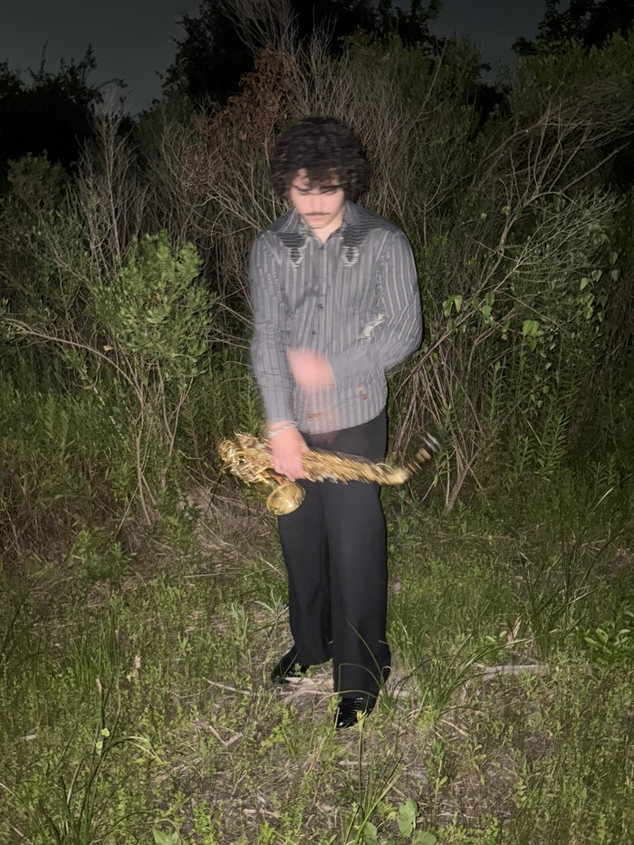

Liam Herbie Mathus is a saxophonist, composer, and human being working within concepts of sound, performance, and environment. Born in Houston, Mathus moved to Baltimore in 2024 to study at the Peabody Institute where he currently attends. In 2026, Mathus formed his own group which has performed all across the northeast, including Baltimore, Washington D.C., Philadelphia, and New York City.
Mathus’ performance practice is notable for his exploration of specific moments in emotion through highly curated spaces, both sonically and physically. In addition to working alongside musical peers, Mathus has also worked in tandem with visual artists and dancers to create worlds both the performer and listener are free to explore within.
Mathus has had the honor of working with and performing alongside musicians such as Wynton Marsalis, Vincent Gardner, Sean Jones, Miguel Zenon, Jon Faddis, Dafnis Prieto, Warren Wolf, Jason Moran, among others.
